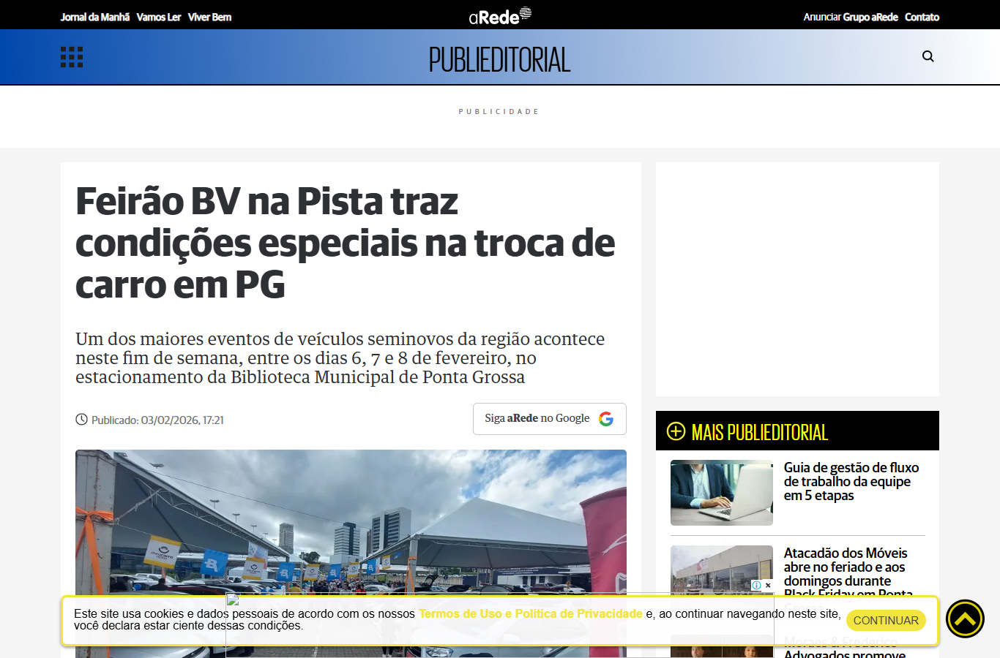
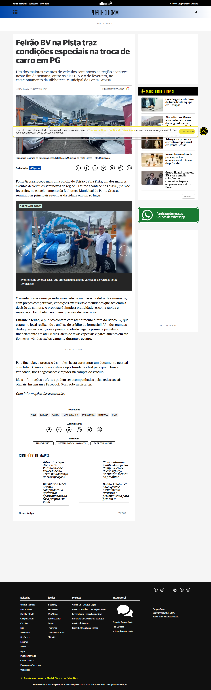

Sistema de Investigação de Marca e Identidade Online
https://arede.info/publieditorial/624154/feirao-bv-na-pista-traz-condicoes-especiais-na-troca-de-carro-em-pg
Prioridade: HIGH · Cenário: C_POSSIBLE_OFFICIAL_CHANNEL · Revisão humana: PENDING
Embora publicado em um portal de notícias regional (arede.info), o conteúdo consiste em um 'Publieditorial' (peça publicitária contratada) promovendo o evento comercial 'Feirão BV na Pista' e ofertando financiamento de veículos. O anúncio direciona os consumidores para 'redes sociais oficiais: Instagram e Facebook @feiraobvnapista.pg', que, conforme evidenciado em E-DISC-001 e E-SHOT-FULL, utilizam a marca do Banco BV na própria nomenclatura do perfil para captar simulações de crédito sem informar a razão social, o CNPJ das revendas/organizadores ou a condição de correspondente bancário, exigindo revisão humana prioritária. [Revisor: CONFIRM] Confirma-se a classificação REVIEW_REQUIRED com prioridade HIGH. Apesar de estar hospedada no portal jornalístico regional aRede (arede.info), a publicação é um 'Publieditorial' (conteúdo comercial pago) que promove financiamento de veículos no evento 'Feirão BV na Pista' e indica o perfil '@feiraobvnapista.pg' como 'redes sociais oficiais'. Conforme evidenciado em E-SHOT-FULL e no índice de busca E-DISC-001, a campanha e os perfis vinculados utilizam a marca 'Feirão BV na Pista' para captar simulações de crédito sem informar razão social, CNPJ das lojas/organizadores ou os avisos obrigatórios de correspondente bancário (Res. CMN 4.935/2021).


| Ref | Tipo | Local | Conteúdo |
|---|---|---|---|
| E-URL | domain | url | URL final: https://arede.info/publieditorial/624154/feirao-bv-na-pista-traz-condicoes-especiais-na-troca-de-carro-em-pg (domínio: arede.info) |
| E-COLLECT | network | collection | Status da coleta: OK; HTTP 200; ocorrências: network did not become idle (continuing) |
| E-DISC-001 | text | search_index | Índice de busca (grounding): arede.info — **Estabelecimento / Perfil:** Organizadores regionais e agências de publicidade automotiva (`@feiraobvnapista.pg`, `@feiraoseminovosoficial` e `@PhygitalPublicidade`) | `https://arede.info/` (Conteúdo de marca: *Feirão BV na Pista* – vinculando os perfis de Instagram e Facebook `@feiraobvnapista.pg`) | **Como utilizam a marca:** Utilizam a marca **"Feirão BV"** e **"Feirão BV na Pista"** diretamente no nome de perfis de redes sociais (`@feiraobvnapista.pg`) e em posts patrocinados com links externos de simulação (*"Clique aqui e faça uma simulação"*), aparentando serem canais oficiais de campanhas regionais do banco | **Conformidade (CNPJ / Correspondente):** As publicações e perfis promovem captação de financiamento e simulação de crédito apenas com a ressalva *"Crédito sujeito a análise"*, omitindo o CNPJ e a razão social das empresas/agências ou revendas responsáveis pela operação e recepção dos dados dos clientes |
| E-SHOT-VIEWPORT | screenshot | viewport | evidence\Cdb12a39b69\attempt-1\viewport.png (sha256 a74662d1848a05e5…) |
| E-SHOT-FULL | screenshot | page | evidence\Cdb12a39b69\attempt-1\fullpage.png (sha256 9afa734e8c9836e4…) |
| E-TITLE | title | head | Feirão BV na Pista traz condições especiais na troca de carro em PG | aRede |
| E-META-1 | meta | head | description: Um dos maiores eventos de veículos seminovos da região acontece neste fim de semana, entre os dias 6, 7 e 8 de fevereiro, no estacionamento da Biblioteca Municipal de Ponta Grossa |
| E-META-2 | meta | head | og:site_name: aRede |
| E-META-3 | meta | head | og:title: Feirão BV na Pista traz condições especiais na troca de carro em PG | aRede |
| E-META-4 | meta | head | og:description: Um dos maiores eventos de veículos seminovos da região acontece neste fim de semana, entre os dias 6, 7 e 8 de fevereiro, no estacionamento da Biblioteca Municipal de Ponta Grossa |
| E-META-5 | meta | head | author: aRede |
| E-CANONICAL | meta | head | https://arede.info/publieditorial/624154/feirao-bv-na-pista-traz-condicoes-especiais-na-troca-de-carro-em-pg |
| E-HEAD-1 | heading | page | Jornalismo |
| E-HEAD-2 | heading | page | Comercial |
| E-HEAD-3 | heading | page | EDITORIAS |
| E-HEAD-4 | heading | page | SEÇÕES |
| E-HEAD-5 | heading | page | PROJETOS |
| E-HEAD-6 | heading | page | PLATAFORMAS |
| E-HEAD-7 | heading | page | INSTITUCIONAL |
| E-HEAD-8 | heading | page | PUBLIEDITORIAL |
| E-HEAD-9 | heading | page | Feirão BV na Pista traz condições especiais na troca de carro em PG |
| E-HEAD-10 | heading | page | Um dos maiores eventos de veículos seminovos da região acontece neste fim de semana, entre os dias 6, 7 e 8 de fevereiro, no estacionamento da Biblioteca Municipal de Ponta Grossa |
| E-HEAD-11 | heading | page | Publicado: 03/02/2026, 17:21 |
| E-HEAD-12 | heading | page | Da Redação |
| E-HEAD-13 | heading | page | GALERIA DE FOTOS |
| E-HEAD-14 | heading | page | TUDO SOBRE |
| E-HEAD-15 | heading | page | COMPARTILHAR |
| E-HDR | text | header | Jornal da Manhã Vamos Ler Viver Bem Anunciar Grupo aRede Contato Jornalismo Comercial EDITORIAS Últimas Notícias Ponta Grossa Especial Grupo aRede Campos Gerais Curitiba e RMC Cotidiano Horóscopo Esportes Mix A Força do Agro Empregos e Concursos Viver Bem Seu Direito Especiais Vamos Ler SEÇÕES aRedePlay aRedeNews Web Stories Bom dia Astral Tempo Empregos Conteúdo de marca Obituário PROJETOS Vamos Ler - Geração Digital Anuário Caminhos dos Campos Gerais Revista Ponta Grossa Competitiva Painel Digital 'O Melhor da Educação' Anuário do Direito Cross Duathlon Ponta Grossa PLATAFORMAS Jornal da Manhã Viver Bem INSTITUCIONAL Anunciar Grupo aRede Fale Conosco Política de Privacidade PUBLIEDITORIAL | GALERIA DE FOTOS | CONTEÚDO DE MARCA | MAIS PUBLIEDITORIAL |
| E-FOLD | text | viewport (acima da dobra) | Jornal da Manhã Vamos Ler Viver Bem Anunciar Grupo aRede Contato Jornalismo Comercial EDITORIAS Últimas Notícias Ponta Grossa Especial Grupo aRede Campos Gerais Curitiba e RMC Cotidiano Horóscopo Esportes Mix A Força do Agro Empregos e Concursos Viver Bem Seu Direito Especiais Vamos Ler SEÇÕES PUBLIEDITORIAL PUBLICIDADE Feirão BV na Pista traz condições especiais na troca de carro em PG Um dos maiores eventos de veículos seminovos da região acontece neste fim de semana, entre os dias 6, 7 e 8 de fevereiro, no estacionamento da Biblioteca Municipal de Ponta Grossa Publicado: 03/02/2026, 17:21 Siga aRede no Google MAIS PUBLIEDITORIAL Guia de gestão de fluxo de trabalho da equipe em 5 etapas Atacadão dos Móveis abre no feriado e aos domingos durante Black Friday em Ponta Grossa Moraes & Frederico Advogados promove encontro empresarial em Ponta Grossa Este site usa cookies e dados pessoais de acordo com os nossos Termos de Uso e Política de Privacidade e, ao continuar navegando neste site, você declara estar ciente dessas condições. CONTINUAR |
| E-FTR | text | footer | TUDO SOBRE AREDE BANCO BV CARROS FEIRÃO BV NA PISTA PONTA GROSSA SEMINOVOS TROCA COMPARTILHAR INTERAGIR RELATAR ERROS RECEBER NOTÍCIAS NO WHATS FALAR COM A GENTE | Editorias Últimas Notícias Ponta Grossa Curitiba e RMC Campos Gerais Cotidiano Mix Viver Bem Horóscopo Esportes Vamos Ler Agro Papo de Mercado Comes e Bebes Empregos e Concursos Webséries Seções aRedePlay aRedeNews Web Stories Bom dia Astral Tempo Empregos Conteúdo de marca Obituário Projetos Vamos Ler - Geração Digital Anuário Caminhos dos Campos Gerais Revista Ponta Grossa Competitiva Painel Digital 'O Melhor da Educação' Anuário do Direito Cross Duathlon Ponta Grossa Institucional Anunciar Grupo aRede Fale Conosco Política de Privacidade Plataformas Jornal da Manhã Vamos Ler Viver Bem Este material não pode ser publicado, transmitido por broadcast, reescrito ou redistribuído sem prévia autorização. Grupo aRede Copyright © 2013 - 2026 Todos os direitos reservados. |
| E-NAV | nav | header | Jornal da Manhã <https://arede.info/jornaldamanha/> | Vamos Ler <https://arede.info/vamos-ler> | Viver Bem <https://arede.info/viverbem> | <https://arede.info/> | Anunciar Grupo aRede <https://arede.info/contato-publicidade> | Contato <https://arede.info/contato> | Facebook ARede <https://www.facebook.com/aredeinfo/> | Instagram ARede <https://www.instagram.com/arede.info/> | Visite nosso canal no Youtube <https://www.youtube.com/c/aRedeinfo_Aconteceu_ta_na_rede> | Twitter ARede <https://twitter.com/aredeinfo> | Compartilhar no Whatsapp <https://api.whatsapp.com/send?phone=5542991184382> | Compartilhar no E-mail <mailto:?subject=ARede:&body=https://mwl.press/AR624154> | Jornalismo <https://api.whatsapp.com/send?phone=5542991184382> | Comercial <https://api.whatsapp.com/send?phone=554291240530> | Últimas Notícias <https://arede.info/Ultimas> | Ponta Grossa <https://arede.info/ponta-grossa> | Especial Grupo aRede <https://arede.info/especial-grupo-arede> | Campos Gerais <https://arede.info/campos-gerais> | Curitiba e RMC <https://arede.info/curitibaermc> | Cotidiano <https://arede.info/editorias/cotidiano> | Horóscopo <https://arede.info/bom-dia-astral> | Esportes <https://arede.info/esporte> | Mix <https://arede.info/mix> | A Força do Agro <https://arede.info/a-forca-do-agro> | Empregos e Concursos <https://arede.info/empregos> | Viver Bem <https://arede.info/viverbem> | Seu Direito <https://arede.info/seu-direito> | Especiais <https://arede.info/publieditorial/624154/feirao- |
| E-CTA-1 | cta | header | Compartilhar no Whatsapp <https://api.whatsapp.com/send?phone=5542991184382> |
| E-CTA-2 | cta | page | Compartilhar no Telegram <https://telegram.me/share/?text=Feir%C3%A3o%20BV%20na%20Pista%20traz%20condi%C3%A7%C3%B5es%20especiais%20na%20troca%20de%20carro%20em%20PG&url=https://mwl.press/AR624154> |
| E-CTA-3 | cta | page | Compartilhar no Whatsapp <https://api.whatsapp.com/send?text=Feir%C3%A3o%20BV%20na%20Pista%20traz%20condi%C3%A7%C3%B5es%20especiais%20na%20troca%20de%20carro%20em%20PG%3A%20https%3A%2F%2Fmwl.press%2FAR624154> |
| E-CTA-4 | cta | page | Go to last slide |
| E-CTA-5 | cta | page | Next slide |
| E-CTA-6 | cta | footer | Compartilhar no Whatsapp <https://api.whatsapp.com/send?text=Feir%C3%A3o%20BV%20na%20Pista%20traz%20condi%C3%A7%C3%B5es%20especiais%20na%20troca%20de%20carro%20em%20PG,+confira%20em+https://mwl.press/AR624154> |
| E-CTA-7 | cta | footer | Compartilhar no Telegram <https://telegram.me/share/?text=Feir%C3%A3o%20BV%20na%20Pista%20traz%20condi%C3%A7%C3%B5es%20especiais%20na%20troca%20de%20carro%20em%20PG&url=https://mwl.press/AR624154> |
| E-CTA-8 | cta | page | CONTINUAR <https://arede.info/publieditorial/624154/feirao-bv-na-pista-traz-condicoes-especiais-na-troca-de-carro-em-pg#> |
| E-CTA-9 | cta | header | Compartilhar no Whatsapp <https://api.whatsapp.com/send?phone=554291240530> |
| E-CONTACT-1 | contact | header | Facebook ARede <https://www.facebook.com/aredeinfo/> |
| E-CONTACT-2 | contact | header | Instagram ARede <https://www.instagram.com/arede.info/> |
| E-CONTACT-3 | contact | header | Compartilhar no Whatsapp <https://api.whatsapp.com/send?phone=5542991184382> |
| E-CONTACT-4 | contact | header | Compartilhar no E-mail <mailto:?subject=ARede:&body=https://mwl.press/AR624154> |
| E-CONTACT-5 | contact | header | Jornalismo <https://api.whatsapp.com/send?phone=5542991184382> |
| E-CONTACT-6 | contact | header | Comercial <https://api.whatsapp.com/send?phone=554291240530> |
| E-CONTACT-7 | contact | page | Compartilhar no Facebook <https://www.facebook.com/sharer.php?u=https%3A%2F%2Fmwl.press%2FAR624154> |
| E-CONTACT-8 | contact | page | Compartilhar no Instagram <https://www.instagram.com/arede.info/> |
| E-CONTACT-9 | contact | page | Compartilhar no Telegram <https://telegram.me/share/?text=Feir%C3%A3o%20BV%20na%20Pista%20traz%20condi%C3%A7%C3%B5es%20especiais%20na%20troca%20de%20carro%20em%20PG&url=https://mwl.press/AR624154> |
| E-CONTACT-10 | contact | page | Compartilhar no Whatsapp <https://api.whatsapp.com/send?text=Feir%C3%A3o%20BV%20na%20Pista%20traz%20condi%C3%A7%C3%B5es%20especiais%20na%20troca%20de%20carro%20em%20PG%3A%20https%3A%2F%2Fmwl.press%2FAR624154> |
| E-CONTACT-11 | contact | page | Compartilhar no E-mail <mailto:?subject=ARede:%20Feir%C3%A3o%20BV%20na%20Pista%20traz%20condi%C3%A7%C3%B5es%20especiais%20na%20troca%20de%20carro%20em%20PG&body=https://mwl.press/AR624154> |
| E-CONTACT-12 | contact | footer | Compartilhar no Facebook <https://www.facebook.com/sharer.php?u=https%3A%2F%2Fmwl.press%2FAR624154> |
| E-CONTACT-13 | contact | footer | Compartilhar no Instagram <https://www.instagram.com/arede.info/> |
| E-CONTACT-14 | contact | footer | Compartilhar no Whatsapp <https://api.whatsapp.com/send?text=Feir%C3%A3o%20BV%20na%20Pista%20traz%20condi%C3%A7%C3%B5es%20especiais%20na%20troca%20de%20carro%20em%20PG,+confira%20em+https://mwl.press/AR624154> |
| E-CONTACT-15 | contact | footer | Compartilhar no Telegram <https://telegram.me/share/?text=Feir%C3%A3o%20BV%20na%20Pista%20traz%20condi%C3%A7%C3%B5es%20especiais%20na%20troca%20de%20carro%20em%20PG&url=https://mwl.press/AR624154> |
| E-CONTACT-16 | contact | footer | Compartilhar no E-mail <mailto:?subject=ARede:%20Feir%C3%A3o%20BV%20na%20Pista%20traz%20condi%C3%A7%C3%B5es%20especiais%20na%20troca%20de%20carro%20em%20PG&body=https://mwl.press/AR624154> |
| E-CONTACT-17 | contact | footer | RELATAR ERROS <https://api.whatsapp.com/send?phone=5542991184382> |
| E-CONTACT-18 | contact | footer | RECEBER NOTÍCIAS NO WHATS <https://arede.info/grupos-do-whatsapp> |
| E-CONTACT-19 | contact | footer | FALAR COM A GENTE <https://api.whatsapp.com/send?phone=5542991184382> |
| E-CONTACT-20 | contact | page | Grupos de WhatsApp da aRede <https://arede.info/grupos-do-whatsapp> |
| E-IMG-1 | image | header (acima da dobra) | imagem alt='Logo aRede' src=https://arede.info/themes/default/assets/img/svg/logobranca1.svg (85x26, acima da dobra) |
| E-IMG-2 | image | header (acima da dobra) | imagem alt='Logo' src=https://arede.info/themes/default/assets/img/svg/logoaside.svg (190x89, acima da dobra) |
| E-IMG-3 | image | header (acima da dobra) | imagem alt='facebook' src=https://arede.info/themes/default/assets/img/logo_f.svg (32x29, acima da dobra) |
| E-IMG-4 | image | header (acima da dobra) | imagem alt='instagram' src=https://arede.info/themes/default/assets/img/logo_i.svg (32x29, acima da dobra) |
| E-IMG-5 | image | header (acima da dobra) | imagem alt='youtube' src=https://arede.info/themes/default/assets/img/logo_y.svg (32x29, acima da dobra) |
| E-IMG-6 | image | header (acima da dobra) | imagem alt='twitter' src=https://arede.info/themes/default/assets/img/logo_t.svg (32x29, acima da dobra) |
| E-IMG-7 | image | header (acima da dobra) | imagem alt='whatsapp' src=https://arede.info/themes/default/assets/img/logo_w.svg (32x29, acima da dobra) |
| E-IMG-8 | image | header (acima da dobra) | imagem alt='email' src=https://arede.info/themes/default/assets/img/logo_e.svg (32x29, acima da dobra) |
| E-IMG-9 | image | header (acima da dobra) | imagem alt='whatsapp' src=https://arede.info/themes/default/assets/img/logo_w.svg (26x26, acima da dobra) |
| E-IMG-10 | image | header (acima da dobra) | imagem alt='whatsapp' src=https://arede.info/themes/default/assets/img/logo_w.svg (26x26, acima da dobra) |
| E-IMG-11 | image | page | imagem alt='Google Notícias' src=https://arede.info/themes/default/assets/img/logo_g.svg (40x40, abaixo da dobra) |
| E-IMG-12 | image | page | imagem alt='facebook' src=https://arede.info/themes/default/assets/img/logo_f.svg (40x40, abaixo da dobra) |
| E-IMG-13 | image | page | imagem alt='twitter' src=https://arede.info/themes/default/assets/img/logo_i.svg (40x40, abaixo da dobra) |
| E-IMG-14 | image | page | imagem alt='twitter' src=https://arede.info/themes/default/assets/img/logo_t.svg (40x40, abaixo da dobra) |
| E-IMG-15 | image | page | imagem alt='telegram' src=https://arede.info/themes/default/assets/img/logo_te.svg (40x40, abaixo da dobra) |
| E-IMG-16 | image | page | imagem alt='whatsapp' src=https://arede.info/themes/default/assets/img/logo_w.svg (40x40, abaixo da dobra) |
| E-IMG-17 | image | page | imagem alt='email' src=https://arede.info/themes/default/assets/img/logo_e.svg (40x40, abaixo da dobra) |
| E-IMG-18 | image | footer | imagem alt='facebook' src=https://arede.info/themes/default/assets/img/logo_f.svg (50x40, abaixo da dobra) |
| E-IMG-19 | image | footer | imagem alt='instagram' src=https://arede.info/themes/default/assets/img/logo_i.svg (50x40, abaixo da dobra) |
| E-IMG-20 | image | footer | imagem alt='twitter' src=https://arede.info/themes/default/assets/img/logo_t.svg (50x40, abaixo da dobra) |
| E-TXT-001 | text | page | Feirão BV na Pista traz condições especiais na troca de carro em PG |
| E-TXT-002 | text | page | Ponta Grossa recebe mais uma edição do Feirão BV na Pista, um dos maiores eventos de veículos seminovos da região. O feirão acontece nos dias 6, 7 e 8 de fevereiro, no estacionamento da Biblioteca Municipal de Ponta Grossa, reunindo as principais revendas da cidade em um só lugar. |
| E-TXT-003 | text | page | Durante o feirão, o público contará com atendimento direto do Banco BV, que estará no local realizando a análise de crédito de forma ágil. Um dos grandes destaques desta edição é a possibilidade de pagar a primeira parcela do financiamento em até 60 dias, além de taxas especiais e parcelamento em até 60 meses, válidos exclusivamente durante o evento. |
| E-TXT-004 | text | page | Para financiar, o processo é simples: basta apresentar um documento pessoal com foto. O Feirão BV na Pista é a oportunidade ideal para quem busca variedade, boas negociações e rapidez na compra do veículo. |
| E-TXT-005 | text | page | BANCO BV |
| E-TXT-006 | text | page | FEIRÃO BV NA PISTA |
| E-TXT-007 | text | page | Donna Amora Pet Shop oferece atendimento exclusivo e personalizado para pets em PG |
| E-TXT-008 | text | page | Grupos de Whatsapp |
| E-NET-BLOCKED | network | collection | 3 requisição(ões) bloqueadas pela política: https://securepubads.g.doubleclick.net/gampad/ads?pvsid=1475691120558448&correlator=4441068708760050&eid=122881508%2C122882288%2C122882292%2C31065644%2C31087377&output=ldjh&gdfp_req=1&vrg=202611120201 -> empty or oversized URL; https://securepubads.g.doubleclick.net/gampad/ads?pvsid=1475691120558448&correlator=1446196986773433&eid=122881508%2C122882288%2C122882292%2C31065644%2C31087377&output=ldjh&gdfp_req=1&vrg=202611120201 -> empty or oversized URL; https://securepubads.g.doubleclick.net/gampad/ads?pvsid=1475691120558448&correlator=2298777374350115&eid=122881508%2C122882288%2C122882292%2C31065644%2C31087377&output=ldjh&gdfp_req=1&vrg=202611120201 -> empty or oversized URL |
| Dimensão | Sinal | Achado | Refs |
|---|---|---|---|
| VISUAL_IDENTITY | CONFUSION | As imagens do publieditorial destacam tendas e faixas com as cores e logotipos do Banco BV no evento regional de seminovos. | E-SHOT-VIEWPORT E-SHOT-FULL |
| DECLARED_COMMERCIAL_IDENTITY | CONFUSION | Embora veiculado na seção de Publieditorial do portal aRede, o conteúdo não identifica a razão social nem o CNPJ da empresa organizadora ou das revendas responsáveis pela ação comercial e pelo perfil @feiraobvnapista.pg. | E-HEAD-8 E-SHOT-FULL E-DISC-001 |
| CORRESPONDENT_TRANSPARENCY | CONFUSION | Ausência de declaração de correspondente bancário, CNPJ e canais de ouvidoria na divulgação da campanha de financiamento e captação de clientes. | E-TXT-003 E-SHOT-FULL E-DISC-001 |
| INSTITUTIONAL_LANGUAGE | CONFUSION | O texto afirma que mais informações e ofertas podem ser acompanhadas pelas 'redes sociais oficiais: Instagram e Facebook @feiraobvnapista.pg', induzindo o consumidor a acreditar que o perfil regional pertence diretamente ao banco. | E-TXT-003 E-SHOT-FULL E-DISC-001 |
| LOGO_USAGE | CONFUSION | Uso da marca 'BV' e 'Feirão BV na Pista' no título da matéria paga, nas peças físicas fotografadas e na nomenclatura do perfil de rede social divulgado (@feiraobvnapista.pg). | E-TITLE E-SHOT-FULL E-DISC-001 |
| SERVICE_JOURNEY | CONFUSION | Promove condições de financiamento e direciona o consumidor para o evento presencial e para o perfil @feiraobvnapista.pg, que segundo o índice de busca realiza captação para simulação de crédito sem transparência societária. | E-TXT-003 E-TXT-004 E-SHOT-FULL E-DISC-001 |
| CONTACT_CHANNELS | CONFUSION | Divulga o canal externo @feiraobvnapista.pg no Instagram e Facebook como se fossem redes sociais oficiais da campanha do banco. | E-SHOT-FULL E-DISC-001 |
| CONSUMER_CONFUSION | CONFUSION | Alto potencial de confusão para o consumidor sobre a titularidade oficial do perfil @feiraobvnapista.pg e sobre quais lojistas/correspondentes recebem os dados para análise de crédito. | E-TXT-003 E-SHOT-FULL E-DISC-001 |
Embora publicado em um portal de notícias regional (arede.info), o conteúdo consiste em um 'Publieditorial' (peça publicitária contratada) promovendo o evento comercial 'Feirão BV na Pista' e ofertando financiamento de veículos. O anúncio direciona os consumidores para 'redes sociais oficiais: Instagram e Facebook @feiraobvnapista.pg', que, conforme evidenciado em E-DISC-001 e E-SHOT-FULL, utilizam a marca do Banco BV na própria nomenclatura do perfil para captar simulações de crédito sem informar a razão social, o CNPJ das revendas/organizadores ou a condição de correspondente bancário, exigindo revisão humana prioritária.
Nenhum CNPJ ou razão social identificáveis no conteúdo coletado.
| Tipo | Valor | Ref | Contexto |
|---|---|---|---|
| domain | arede.info | E-URL | |
| social_profile | https://www.facebook.com/aredeinfo/ | E-NAV | |
| social_profile | https://www.instagram.com/arede.info/ | E-NAV | |
| social_profile | https://www.youtube.com/c/aRedeinfo_Aconteceu_ta_na_rede | E-NAV | |
| social_profile | https://www.facebook.com/sharer.php?u=https%3A%2F%2Fmwl.press%2FAR624154 | E-CONTACT-7 | |
| trade_name | aRede | E-META-2 | |
| Compartilhar no Whatsapp <https://api.whatsapp.com/send?phone=5542991184382> | E-CONTACT-3 | ||
| Jornalismo <https://api.whatsapp.com/send?phone=5542991184382> | E-CONTACT-5 | ||
| Comercial <https://api.whatsapp.com/send?phone=554291240530> | E-CONTACT-6 | ||
| Compartilhar no Whatsapp <https://api.whatsapp.com/send?text=Feir%C3%A3o%20BV%20na%20Pista%20traz%20condi%C3%A7%C3%B5es%20especiais%20na%20troca%20de%20carro%20em%20PG%3A%20https%3A%2F%2Fmwl.press%2FA | E-CONTACT-10 | ||
| Compartilhar no Whatsapp <https://api.whatsapp.com/send?text=Feir%C3%A3o%20BV%20na%20Pista%20traz%20condi%C3%A7%C3%B5es%20especiais%20na%20troca%20de%20carro%20em%20PG,+confira%20em+https://mwl.press/ | E-CONTACT-14 |
Mapeamento indicativo para apoio à auditoria. Não constitui conclusão regulatória; a decisão definitiva pertence à auditoria.
Fonte: NORMATIVE
Art. 14. O contrato de correspondente deve estabelecer: [...] II - vedação à utilização, pelo contratado, de logomarca ou de outros atributos que sejam similares aos adotados pela instituição contratante em suas agências, postos de atendimento, sítio eletrônico na internet, aplicativo ou outras plataformas de comunicação em rede;
Hipótese: Uso de logomarca ou de atributos similares aos adotados pela contratante em seus canais. A norma disciplina correspondentes contratados; o responsável não foi identificado como correspondente.
Evidência observada: E-DISC-001 E-SHOT-FULL E-SHOT-VIEWPORT E-TITLE
Informação faltante:
Fonte: NORMATIVE
Art. 14. O contrato de correspondente deve estabelecer: [...] III - divulgação ao público, pelo contratado, de sua condição de prestador de serviços à instituição contratante, identificada pelo nome com que é conhecida no mercado, com descrição dos produtos e serviços oferecidos e canais de contato da instituição contratante, inclusive de sua ouvidoria, em local visível, em destaque e em formato legível, por meio de: a) sítio eletrônico do correspondente na internet, acessível na página inicial; b) aplicativo e outras plataformas de comunicação em rede do correspondente; [...]
Hipótese: Divulgação ao público da condição de prestador de serviços à contratante ausente, insuficiente ou sem destaque. A norma disciplina correspondentes contratados; o responsável não foi identificado como correspondente.
Evidência observada: E-DISC-001 E-HEAD-8 E-SHOT-FULL E-TITLE E-TXT-002 E-TXT-003 E-TXT-004
Informação faltante:
Fonte: NORMATIVE
Art. 3º O correspondente atua por conta e sob as diretrizes da instituição contratante, que assume inteira responsabilidade pelo atendimento prestado aos clientes e usuários por meio do contratado.
Hipótese: Atendimento ao público prestado por meio do contratado em condições que podem não seguir as diretrizes da contratante. A norma disciplina correspondentes contratados; o responsável não foi identificado como correspondente.
Evidência observada: E-DISC-001 E-SHOT-FULL E-TXT-003 E-TXT-004
Informação faltante:
Se o responsável não for correspondente contratado, os indícios podem caracterizar uso indevido de marca ou fraude, fora do escopo da Res. 4.935: avaliar encaminhamento às áreas jurídica/segurança.
Limitações: requisitos contratuais/internos não fornecidos: mapeamento limitado ao texto normativo
Decisão: CONFIRM → REVIEW_REQUIRED / HIGH
Confirma-se a classificação REVIEW_REQUIRED com prioridade HIGH. Apesar de estar hospedada no portal jornalístico regional aRede (arede.info), a publicação é um 'Publieditorial' (conteúdo comercial pago) que promove financiamento de veículos no evento 'Feirão BV na Pista' e indica o perfil '@feiraobvnapista.pg' como 'redes sociais oficiais'. Conforme evidenciado em E-SHOT-FULL e no índice de busca E-DISC-001, a campanha e os perfis vinculados utilizam a marca 'Feirão BV na Pista' para captar simulações de crédito sem informar razão social, CNPJ das lojas/organizadores ou os avisos obrigatórios de correspondente bancário (Res. CMN 4.935/2021).
| Tema | Severidade | Questionamento | Refs |
|---|---|---|---|
| Natureza da página hospedeira vs. Conteúdo patrocinado | LOW | Embora o domínio arede.info seja um portal de notícias regional, a página é expressamente um 'Publieditorial' (peça publicitária contratada) que promove o 'Feirão BV na Pista' e direciona consumidores para o perfil '@feiraobvnapista.pg' como 'redes sociais oficiais', onde ocorre captação de simulações de financiamento sem identificação de CNPJ, razão social ou condição de correspondente bancário das revendas/organizadores. | E-URL E-HEAD-8 E-TXT-002 E-TXT-003 E-SHOT-FULL E-DISC-001 |
| domain_attribution | MEDIUM | Responsável pela página não identificado; a conclusão sobre a marca não pode ser atribuída a um estabelecimento específico. | E-URL |
| Fonte | Consulta / hipótese | URL original | Título / trecho |
|---|---|---|---|
| grounding | Objetivo: Lojas e multimarcas que divulgam 'Feirão Banco BV' / 'Feirão BV Financeira'.
Execute no Google Search as seguintes consultas (dorks):
- ("Feirão Banco BV" OR "Feirão bv financeira" OR "Feirão BV") (loja OR veículos OR seminovos OR multimarcas) -site:bv.com.br -site:bancobv.com.br -site:bvfinanceira.com.br -site:bvinvestimentos.com.br -site:napista.com.br -site:bvopen.com.br -site:meufinanciamentosolar.com.br -site:votorantim.com.br -site:vam.com.br -site:reclameaqui.com.br -site:jusbrasil.com.br -site:jus.br -site:weebly.com -site:site123.me
Liste de forma abrangente as páginas públicas encontradas (até 12 resultados distintos), informando para cada uma o nome do estabelecimento/perfil, a URL e como a marca é utilizada (destaque visual, título, feirão, simulador, redes sociais e se há ou não identificação clara de CNPJ e condição de correspondente bancário). H5-establishment:feirao | https://arede.info/publieditorial/624154/feirao-bv-na-pista-traz-condicoes-especiais-na-troca-de-carro-em-pg | arede.info **Estabelecimento / Perfil:** Organizadores regionais e agências de publicidade automotiva (`@feiraobvnapista.pg`, `@feiraoseminovosoficial` e `@PhygitalPublicidade`) | `https://arede.info/` (Conteúdo de marca: *Feirão BV na Pista* – vinculando os perfis de Instagram e Facebook `@feiraobvnapista.pg`) | **Como utilizam a marca:** Utilizam a marca **"Feirão BV"** e **"Feirão BV na Pista"** diretamente no nome de perfis de redes sociais (`@feiraobvnapista.pg`) e em posts patrocinados com links externos de simulação (*"Clique aqui e faça uma simulação"*), aparentando serem canais oficiais de campanhas regionais do banco | **Conformidade (CNPJ / Correspondente):** As publicações e perfis promovem captação de financiamento e simulação de crédito apenas com a ressalva *"Crédito sujeito a análise"*, omitindo o CNPJ e a razão social das empresas/agências ou revendas responsáveis pela operação e recepção dos dados dos clientes |
Original: https://arede.info/publieditorial/624154/feirao-bv-na-pista-traz-condicoes-especiais-na-troca-de-carro-em-pg
Final: https://arede.info/publieditorial/624154/feirao-bv-na-pista-traz-condicoes-especiais-na-troca-de-carro-em-pg
| Artefato | Caminho | SHA-256 | Bytes |
|---|---|---|---|
| screenshot_viewport | evidence\Cdb12a39b69\attempt-1\viewport.png | a74662d1848a05e56283d4ef10e0f6f96ac3be2d996ef84538396b5742e50250 | 484805 |
| screenshot_full | evidence\Cdb12a39b69\attempt-1\fullpage.png | 9afa734e8c9836e47be8c1716ef6f9c7186dec534a8bd0c408e984460a6850be | 1467908 |
| html | evidence\Cdb12a39b69\attempt-1\page.html.txt | 5e89510c674e6c3dbc1a1efddc30026ce578a3ad5bc477192a84a95258399107 | 117013 |
| text | evidence\Cdb12a39b69\attempt-1\text.txt | 124702c1e9c01234a5a31156486c26736576b356e5cd34c92626918f9583a555 | 5721 |
| page_data | evidence\Cdb12a39b69\attempt-1\page.json | 55eca5ac24b17d8df658895c56ec947519c2a9d96ec98b9eef70924df81f6a72 | 67562 |
| Quando | De | Para | Nota |
|---|---|---|---|
| 2026-11-23T14:17:59+00:00 | DISCOVERED | QUEUED | prioritised (score 0.0) |
| 2026-11-23T15:06:18+00:00 | QUEUED | COLLECTING | |
| 2026-11-23T15:06:34+00:00 | COLLECTING | COLLECTED | |
| 2026-11-23T15:06:34+00:00 | COLLECTED | ANALYZING | |
| 2026-11-23T15:07:22+00:00 | ANALYZING | REVIEWING | |
| 2026-11-23T15:07:32+00:00 | REVIEWING | COMPLETED |